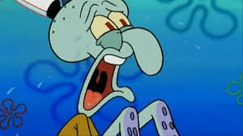
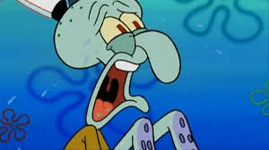

article
Squidward Quincy Tentacles adalah karakter dalam animasi SpongeBob SquarePants. Dia adalah seekor gurita yang tinggal di rumah berbentuk moai. Bertetangga dengan SpongeBob dan Patrick Star, tetapi ia tidak suka memiliki tetangga seperti mereka karena sering mengganggunya dalam hari santainya.

 
